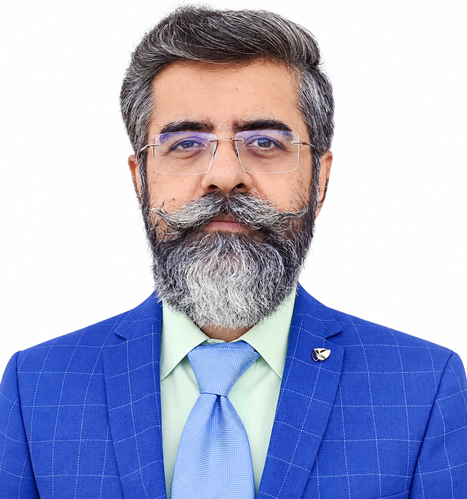

Jai Mendiratta
Programme Leadership · Digital Health · Government Partnerships · Product Strategy
A development and technology professional with 24+ years of experience, including over 13 years in digital health and public-purpose programmes. I work at the intersection of government systems, innovative digital products, strategic partnerships and large-scale programme delivery.

Bridging public systems, technology and people
Experience spanning maternal, newborn and child health, agriculture, sanitation, mobile services and government-led digital transformation.
Digital health & product strategy
Design, rollout, user research, product requirements, testing and continuous improvement for digital services used in public programmes.
Government partnerships
Engagement with MoHFW, NHM and state government counterparts to enable delivery, approvals and institutional transitions.
Programme & people leadership
Leading delivery and cross-functional teams, coordinating complex partners, monitoring service performance and supporting operational strategy.
Scale & sustainability
Supporting the transition of mobile health services to government systems so that services can continue beyond donor-supported project periods.
Technology-enabled communication
SMS, IVR, mobile value-added services, frontline worker learning and targeted information channels for health and agriculture.
Business development & partnerships
Proposal support, partnership negotiations, revenue growth, telecom operator management and programme opportunity development.
Evidence of delivery at scale
Selected results from Jai's submitted career documentation; these describe his stated responsibilities and contributions.
13-state national scale-up
Worked with MoHFW on Kilkari and Mobile Academy as the mobile health services scaled to 13 states, while supporting their transition to government ownership.
16 states · 11 State Leads
Led mAgri SMS and IVR dissemination across 16 project states and supervised 11 State Leads against annual operating plans.
Government research enablement
Secured UP government approval for a Johns Hopkins digital product research team within UP-NHM focusing on eSanjeevani and eKavach.
Revenue doubled
Reported growth in mobile VAS revenue from ₹30 million to ₹60 million over 2008–2011, alongside multiple promotions and product launches.
Mobile Kunji, Mobile Academy & Kilkari
Supported launches for frontline health workers and expectant mothers in Bihar, including field-testing and product delivery.
RCH 2.0
Provided technical assistance on designing, developing and implementing RCH 2.0 as part of work supporting digital adoption and health systems strengthening.
Career experience
A progression from technology and commercial product management into national-scale development programmes, digital health and public-sector partnerships.
Health Systems Strengthening & Health Systems / Business Analysis Consultant
Supported the Ministry of Health and Family Welfare on RCH 2.0 digital health product design and implementation, RMNCH+A interventions, health systems strengthening and improved service delivery.
Consultant, Government Relations
Managed government relationships for digital health research with Johns Hopkins and the University of Cape Town in Uttar Pradesh. Secured state approval to establish a digital product research team within UP-NHM.
Lead – Digital Solutions
Managed SMS and IVR agricultural content channels across 16 project states and supervised a team of 11 State Leads.
Head of Digital Programmes · Senior Manager, Digital Partnerships · Senior Mobile Product Manager
Led digital service delivery and partnerships; worked on nationwide expansion of Kilkari and Mobile Academy, transition to government, Swachh Bharat Mission's SBM Academy, partner management and adoption strategies.
Manager – mHealth, Wireless Solutions Group
Developed mHealth product concepts and business cases, gathered requirements, coordinated cross-functional delivery, ran UAT and worked on government RFIs and RFPs.
Senior Mobile Product Manager
Oversaw the design, development and launch of mobile behaviour-change communication services for frontline health workers and mothers in Bihar, including Mobile Kunji, Mobile Academy and Kilkari.
Business Development & Mobile VAS Leadership
Progressed from Executive to Senior Manager. Led product development, mobile operator relationships, negotiations and revenue growth for SMS, voice and mobile content services.
Senior Officer
Managed customer email queries and digital content operations for Indiatimes services.
Customer Care Executive
Supported mobile telecom customers and contributed to employee product training and training documentation.
Academic background
Postgraduate Programme in Business Management
Marketing · IMT Centre for Distance Learning, Ghaziabad · 2010
Bachelor of Commerce
University of Delhi · 2001
Building programmes that work—and last.
Open to conversations about senior roles in digital health, programme leadership, government partnerships, product strategy and development-sector operations, in India or internationally.
Professional information presented from Jai's supplied CV and career history. Verify dates and personal details before publishing this site publicly.